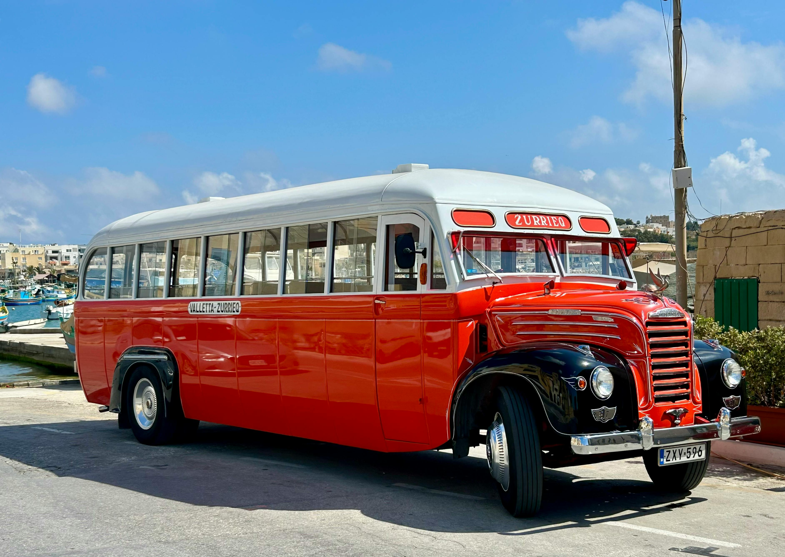

About Taniti
Taniti is a small, tropical island in the Pacific. While the island has an area of less than 500 square miles, the terrain is varied and includes both sandy and rocky beaches, a small but safe harbor, lush tropical rainforests, and a mountainous interior that includes a small, active volcano. Taniti has an indigenous population of about 20,000. Until a recent increase in tourism, most the Tanitian economy was dominated by fishing or agriculture.
Activities
There are many activities to enjoy on Taniti, from hiking in the rainforest to relaxing on the beach.
Lodging
Taniti offers a variety of lodging options, from affordable hostels to a large four star resort!

Transportation
Getting around Taniti is easy with our reliable transportation options, including taxis, buses, and rental cars.
Ready to plan your trip to Taniti? Click here to book your trip today!